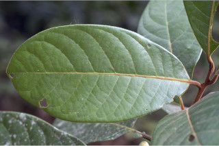
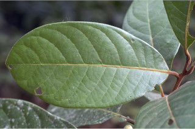
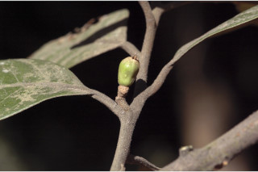
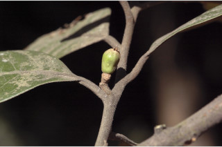

| Leaves : | Leaves simple , alternate , spiral ; petiole 0.4-2 cm long, densely rusty tomentose , planoconvex in cross section; lamina 6-25 x 3-9 cm, with variable shape, elliptic to elliptic-obovate , apex obtuse to acute or acuminate , base acute , margin entire or slightly revolute , coriaceous , glaucous beneath, drying green above, brown beneath, sparsely hairy in intercostals , glabrous above except midrib tomentose near base; secondary_nerves 8-15 pairs, impressed above, strong beneath, usually gradually curved; tertiary_nerves distantly percurrent , strong. |


 


 
